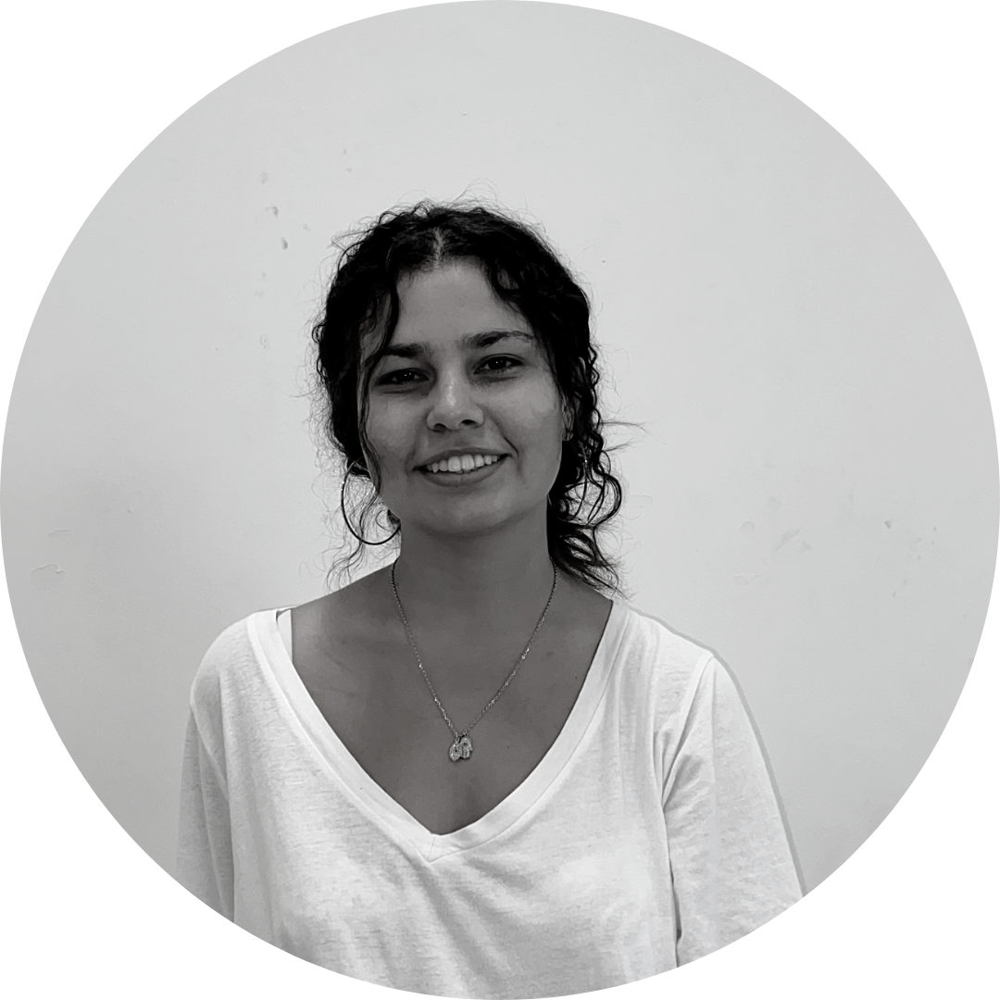

Lucía López Aguilera
Nací en La Habana, Cuba. A los 12 años llegué a Barcelona
Desde pequeña mostré mucho interés en las matemáticas y el dibujo, asignaturas en las cuales, además, destacaba. Decidí estudiar arquitectura porque me emocionó la posibilidad de crear algo que representara un hogar para alguien.
Al comenzar la carrera empecé a estudiar los sistemas constructivos y la accesibilidad de los edificios que me rodeaban y las nuevas posibilidades de expansión urbana en aquellos territorios que habitaba. También comencé a comparar la manera de diseñar que estaba aprendiendo en la universidad con aquella en la que había nacido, analizando sus diferencias y semejanzas.
Al tercer año tuve la oportunidad de realizar un Erasmus en la universidad Bauhaus, lo que me permitió aprender una nueva metodología para entender los espacios. Conocí el mundo del diseño paramétrico y el análisis de datos, lo que me ayudó a volver a conectar con las matemáticas y a replantear la manera de concebir los diseños.

lucia.laarchitecture@gmail.com
www.linkedin.com/in/lucialopezaguilera